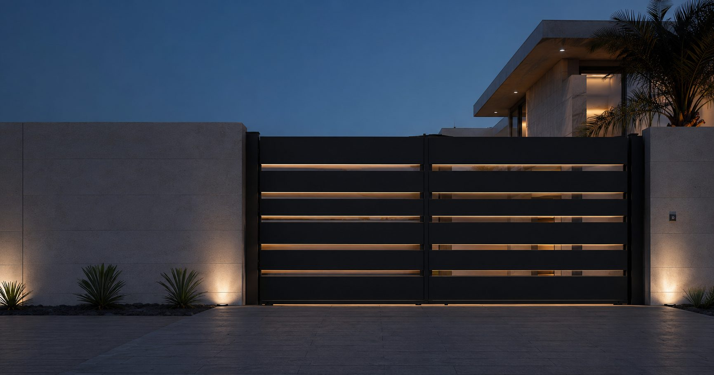
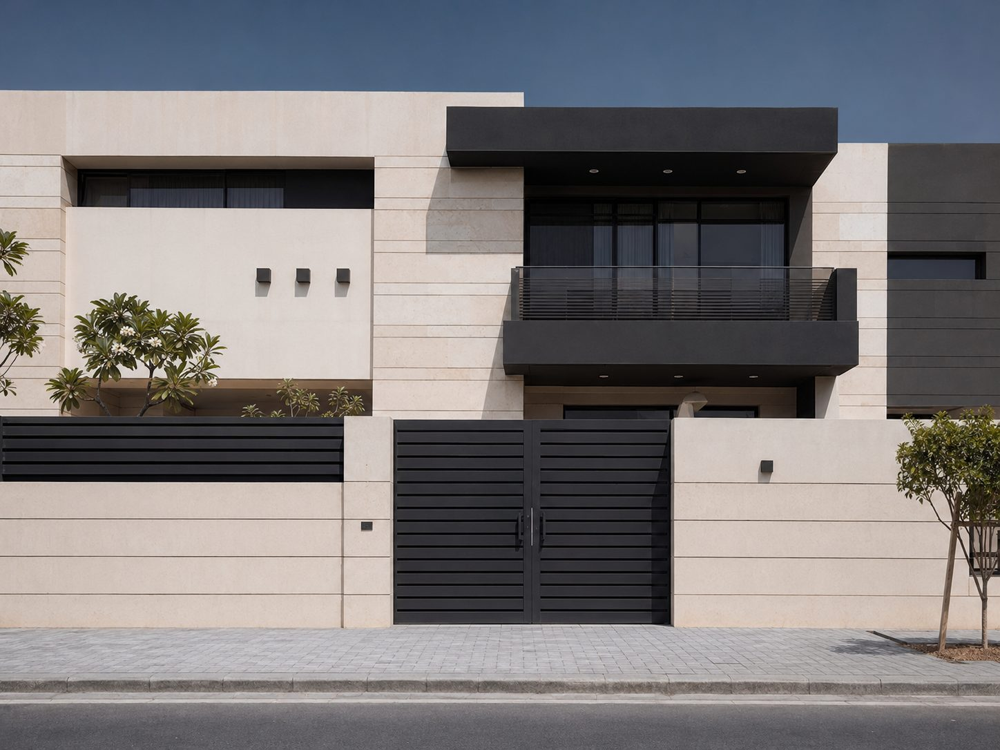
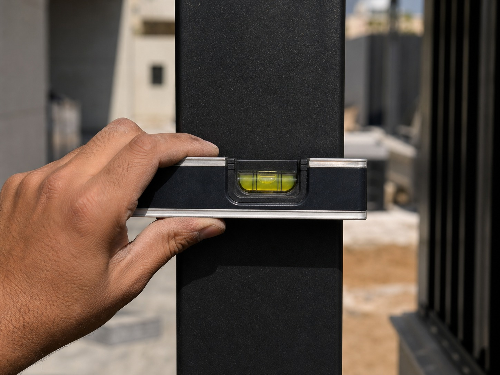

Services · Gates
Your gate is the first thing anyone sees
Swing, sliding, cantilever and automated entrance gates — designed to the façade, built to the measurement, and coated for the exposure your property actually has.

Clear opening 4200 mmWhat we build
Gate types
Swing Gates
Single or double leaf. Simplest mechanism, lowest maintenance. Needs swing clearance inside the plot.
Sliding Gates
Track-guided. Best where driveway depth is limited. Requires a clear run-back along the boundary wall.
Cantilever Gates
No ground track, so nothing to jam with sand or debris. Heavier counterbalance, wider footing.
Pedestrian Gates
Matched to the main gate in material and finish, usually with separate access control.
01 / Climate
Will it survive Bahrain?
This is the question that matters most, and the one most quotes avoid answering. Heat cycling, humidity near 80%, and salt-laden coastal air will find every gap in a poor specification.
Steel is stronger and cheaper, and is the right choice inland when properly treated — hot-dip galvanised or zinc-primed, then polyester powder coated. Aluminium costs more but does not rust, which makes it the safer specification within a few kilometres of the coast.
We tell you which one your address needs, and we write the alloy grade, coating system and warranty period onto the quote. If we specify steel near the coast, we explain why.

Aligned to boundary datum02 / Design fit
Will it suit the property?
A gate is part of the elevation whether it was designed that way or not. It should pick up something already there — the boundary wall coursing, the window rhythm, the entrance line — or it will always look bolted on.
We work from your dimensions and the building's own geometry: infill density for privacy, slat direction, frame proportion, and how the gate reads from the street versus from the door. Finish options run from matte black through to anodised and timber-effect aluminium.
03 / Reliability
What's actually in the quote
Most gate quotes in this market are a price and a sentence. Ours names what you're buying, so you can compare properly — including against us.
Material & grade
Alloy or steel grade, section sizes, infill type and thickness. Not "high-quality metal".
Coating system
Preparation, primer, topcoat and film thickness — the part that decides whether it lasts three years or fifteen.
Hardware & automation
Hinge or roller type, motor make and model, safety edges, remote and intercom provision.
Warranty & lead time
A stated period against coating failure and mechanism defects, and a delivery window we commit to.
04 / Installation
Will the install be clean?
A gate that sags, drags, or sits out of square is almost always an installation problem, not a fabrication one. Ground level across a driveway is rarely as flat as it looks.
We check level and fall across the opening before fabrication, set posts to a verified datum, protect finished surfaces during fixing, and test the full travel and automation cycle before we leave. Site is swept and cleared, and you get handover photos.

Level verified ± 1 mmGate questions
Before you commit
It's decided by your site, not by preference. Swing needs clear space inside the plot for the leaves to open. Sliding needs a clear run along the wall. If neither is available, cantilever solves it at higher cost. We'll tell you which your driveway allows.
Often yes — if the frame is square, the hinges or rollers are sound, and the structure can take the motor loading. We assess it honestly. Automating a gate that's already dragging just breaks the motor instead.
Width, material, infill density, coating system and automation each move the number significantly — a plain steel swing gate and a wide automated aluminium slider aren't the same product. Send dimensions and we'll give a real figure rather than a range that means nothing.
Many managed developments have their own frontage guidelines covering height, style and setback. We'll ask which development you're in and work within its rules — it's easier to design to them than to alter a finished gate.
Send your opening width. We'll do the rest.
A photo of the driveway and a rough measurement is enough to start. We'll come back with material and mechanism advice before pricing.
Quote a Gate →